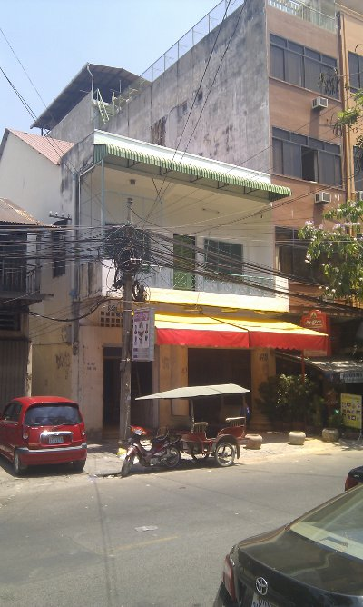
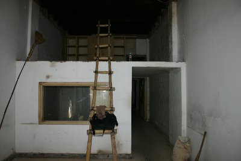
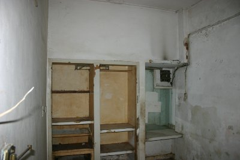

We Are Large We Contain Multitudes
Posted on 09 Apr 2014 by Brad Collins
Do I contradict myself? Very well, then I contradict myself, I am large, I contain multitudes.
– Walt Whitman
The full breadth of what we are working on is somewhat difficult to grok at times. This organizational chart that shows all the different pieces of how Chenla and our commerical sister company Repozit I/O fit together should help. Some of the items in the chart haven't been publically released yet. All will be revealed in good time.
The chart is available as a pdf and a somewhat large png.
{kind=link}
What a Difference a Month Makes
Posted on 31 Mar 2014 by Brad Collins
Our Web server went down a month ago. Sorry about that. We're now back up, using Github Pages to host the site. Thanks Github!
Our new building is no longer the ghost (but not rat or coackroach) infested, decrepit shell that it was when we signed the lease. We've made an enormous amount of progress in the last six weeks as these photos will attest.

We have installed awnings on the side of the building as well as a fixed metal awning on the first floor and a rollout vinyl awning on the ground floor.
The first floor (American 2nd floor) is all but finished with the walls and ceiling patched up, cleaned and painted, and the floors sanded, the screws resunk, and stained and shellacked. We have also completely replaced the chaos of electricical wiring and the fuse box. We can now handle the load from all of the computers that we will be adding and nothing will short out.
We have also changed our original idea, and have swapped the office and conference/podcasting studio. Below is what will be the studio side.
And the side with the windows will become the office side. We can comfortably fit up to 12 desks into this space.
Heading downstairs, we have cut a new door that connects the downstairs to the staircase leading upstairs. Before, if you wanted to go upstairs you had to go out the front and down and alley to get to the entrance.
The toilet still needs some work, but looks much better already. The tile floor was replaced, the plumbing fixed and a new sink installed.
Behind the toilet is the server room. There isn't much to see, it's just a plain white room with a tile floor. We can fit up to four full height racks in here.
The awful cabinates and several walls were knocked out for the tutorial center, which will have enough round for five or six workstations which can comfortably seat both a tutor and a student together.
The last of the demolition was done here in the Naga Shop less than four days ago.
There was a large window between the Naga Shop and the Cafe dining area. This has been removed and replaced with a wooden counter. This is Ruben working on the wood for the counter.

The door has been removed going into the kitchen, the squat toilet turned into a pantry and a large window and pickup counter has replaced a lot of the wall. This is very much still a work in progress.
There is still a lot of work left to be done, but we've come a long long ways in the last six weeks.
Our New Building
Posted on 11 Feb 2014 by Brad Collins
We are very pleased to announce that we have finally managed to lease a building here in Phnom Penh. We had been promised a building last year by persons who shall not be named. But the national elections and the uncertainty after the elections were contested put many things on permanent hold. So we made the decision to go ahead and rent a building ourselves.
The new location is #155 E0/E1 on Street 110, in Daun Penh in Phnom Penh. The location is very good. The building can be clearly seen from Nordodom Blvd. and is only a street over from our present office that is located in Brad's flat on Street 108.
As you can see from the next few shots, the ground floor will need a bit of work.
The left side will be a cafe, with a large kitchen in the back – the wall with the door will be largely knocked out and replaced with a counter.
The right side will need the most work. The half floor will be knocked out entirely and turned into our Naga General Supply shop.

Behind the shop, this forlorn looking area will be enlarged and become the studyhall's tutorial and scanning center.

Don't worry, the toilet will be completely rebuilt.
Behind the tutorial room, not pictured, will be our server room which will be large enough to hold four 19" racks.
There is also a very nice patio at the back of the building on the first floor.
The first floor, which we will be using as office space is in far better shape than the ground floor.
We got the keys about five days ago and are starting the long process of rennovation. The building will be the headquarters for Chenla and our sister for-profit company, Repozit as well as the location for our first Studyhall.
We'll be blogging our progress as things move along.
Doug Engelbart died on Tuesday at the age 88 from kidney failure at his home in Atherton, California. Engelbart is best known as the inventor of the mouse. Let's just get it out of the way for those who haven't seen it. Here is the YouTube video of Engelbart's famous Mother of all Demos:
But Engelbart's vision and contribution went far beyond the mouse. Dave Crocker said it best on the IETF mailing list:
Besides the considerable technical contributions of Doug's project at SRI, theirs was a group that did much to create the open and collaborative tone of the Internet that we've come to consider as automatic and natural, but were unusual in those days.
Engelbart's real goal was to augment human intelligence. Bret Victor has an excellent post that dispells many of the misconceptions of Engelbart's work.
You can find an archive of all of his papers at the Doug Engelbart Institute. There is a very good page at CIS 471 which has collected a bunch of images and links that you might be interested in.
Here's the obligatory link to his wikipedia article. And obituaries from NYT, Chicago Tribune, LA Times, Rueters and The Register.
Our very own BMF (Burr Metadata Framework) was largely inspired by several of Englart's papers. They are well worth the time spent reading them and we hope that his work will continue to be remembered and inspire others for many years to come. Thank you Doug Engelbart, we all owe you an enormous debt of gratitude.
Studyhall Presentations
Posted on 02 Jul 2013 by Brad Collins
Just uploaded the Studyhall Slide Deck on our Presentations page. This will be the primary presentation that we will be using when pitching the Studyhall. This took a suprisingly large amount of work to put together. I hope the effort was worth it. We expect the Presentation will evolve over time, as we fine tune our pitch over time, so expect it to change from time to time. As always, feedback is welcome.